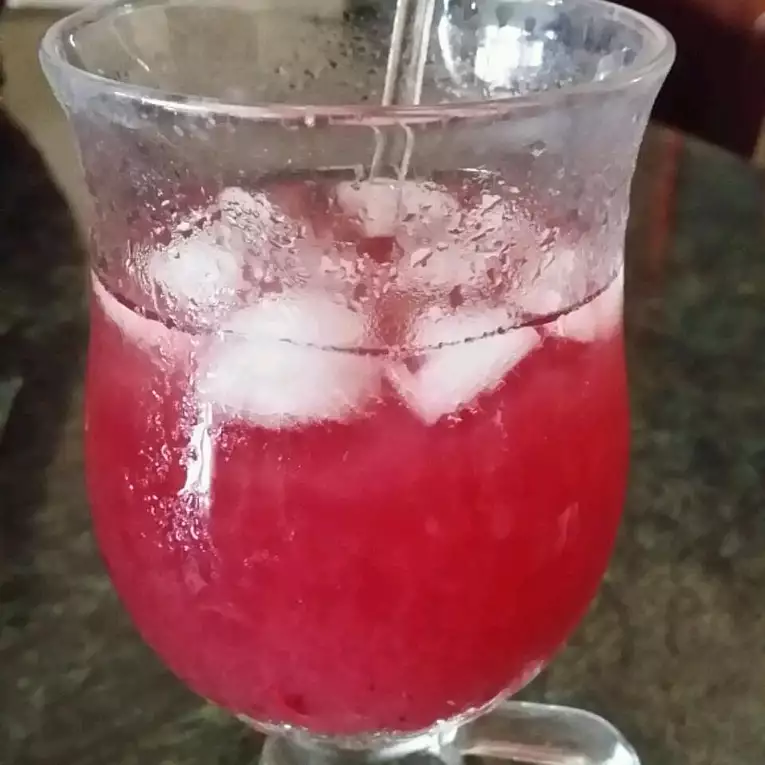

Hot Pink Lemonade

Hot Pink Lemonade
Refreshing, fun recipe for blueberry lemonade! Tart and sweet with a boost of antioxidants from the blueberries. The finished drink is hot pink, almost purple.
Ingredients
- 2 cups white sugar
- 1 cup water
- 2¼ cups fresh lemon juice
- 7 cups cool water
- 2 cups ice
- ¾ cup blueberries
Directions
- Boil one cup of water with the sugar in a saucepan over medium-high heat, stirring until the liquid becomes.
Remove from heat and stir in the lemon juice. Pour 7 cups of cool water and ice into a serving pitcher. Add the lemon syrup and blueberries; stir until you get a 'hot pink' color.n
Nutrition Facts
Per Serving:291 calories; protein 0.5g; carbohydrates 77.2g; fat 0.1g; sodium 12.7mg.
Home page
Previous page
Next page